스웨덴 - 스톡홀롬
북유럽4개국중 눈이 젤 호강한 나라
여러분 이케멘을 보고싶음 스톡홀롬으로!!! ←;;;;
할아버지도 롱다리야 ㅜㅜ
여러분 이케멘을 보고싶음 스톡홀롬으로!!! ←;;;;
할아버지도 롱다리야 ㅜㅜ
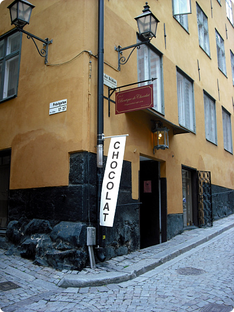
감라스탄 거리 쪼코가게 발견
이때 노벨박물관 가서 구경하구 박물관내 카페에서 파는 아이스크림
먹으러 가는길이었는데 쪼코가게를 보자 망설임 없이 들어간 두사람;;
이때 노벨박물관 가서 구경하구 박물관내 카페에서 파는 아이스크림
먹으러 가는길이었는데 쪼코가게를 보자 망설임 없이 들어간 두사람;;
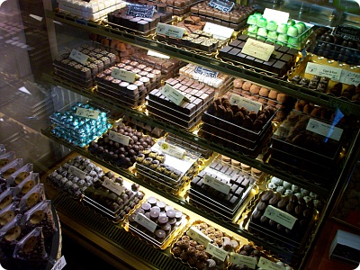
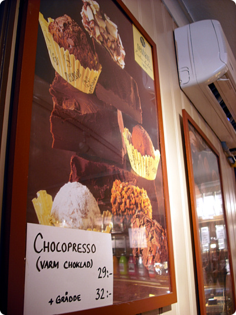
초코프레소?? 신기한건 우선 주문해본다^^;;;
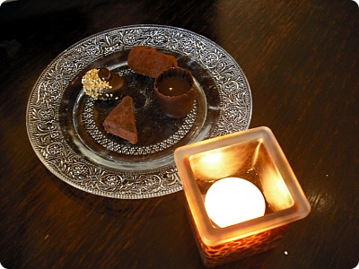
쪼코도 요래요래 4개
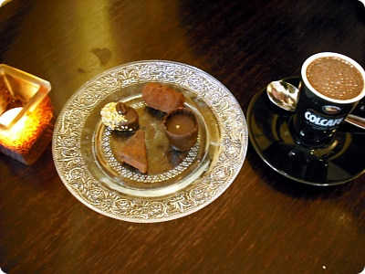
랑 쪼코프레소
쪼코는 언제나 좋아~훗훗
쪼코는 언제나 좋아~훗훗
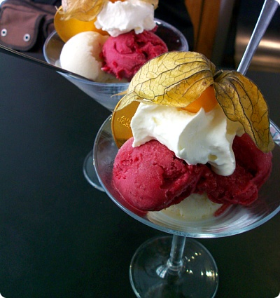
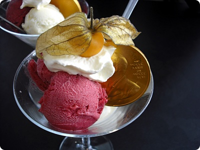
요거이 노벨상 수상식 만찬회에 나오는
아이스크림 +_+
맛있어요~///
아이스크림 +_+
맛있어요~///
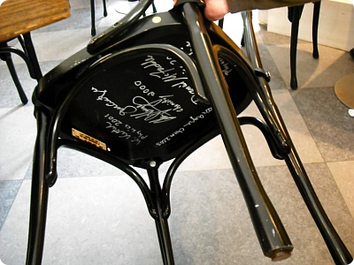
카페내 의자를 들춰보면 역대수상자의 사인을 볼수있다^^
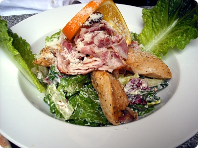
매우 바람직했던 시저샐러드///
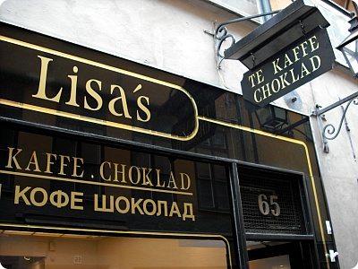
요건 3일째였나?? 감라스탄에서 발견한 또다른 쪼코가게+_+
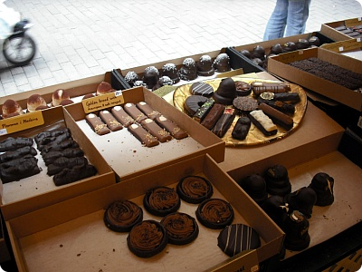
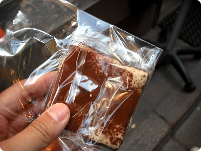
티라미슈 쪼코
말캉말캉 부드러워요~
말캉말캉 부드러워요~
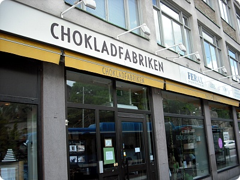
여긴 여행책자에 실려있었던 CHOKLADFABRIKEN
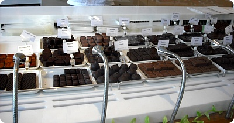
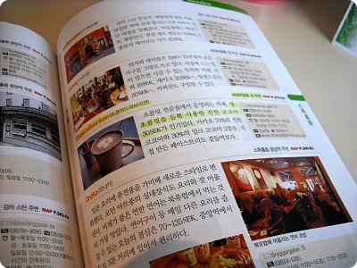
착실하게 형광펜으로 줄까지 그어놨다 ㅋㅋ
여기 종업원인지 여주인인지 잘모르겠지만;;
이쁜언니님이 여행책자를 보더니
자신의 가게가 실린걸 무척 신기해하믄서
어느나라 언어냐구 물어보구 같이일하는 친구한테 보여주고 싶다며
잠깐 빌려가셨다능^^
여기 종업원인지 여주인인지 잘모르겠지만;;
이쁜언니님이 여행책자를 보더니
자신의 가게가 실린걸 무척 신기해하믄서
어느나라 언어냐구 물어보구 같이일하는 친구한테 보여주고 싶다며
잠깐 빌려가셨다능^^
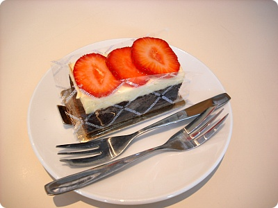
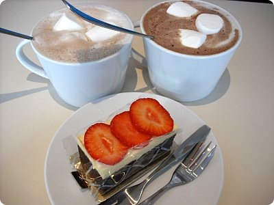
쇼트케키 하나랑 이집 인기메뉴인 핫초코 주문 (Milk/Dark)
케키도 맛나고 핫초코도 대 만족
동생곰이 Dark를 주문했는데 이건 너무 달다고^^;;;
케키도 맛나고 핫초코도 대 만족
동생곰이 Dark를 주문했는데 이건 너무 달다고^^;;;
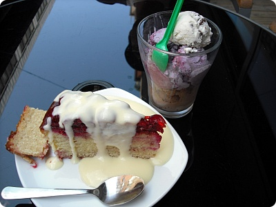
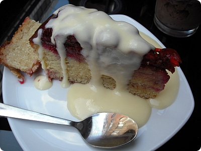
스웨덴에서 핀란드로 가는 바이킹라인 기다리믄서
노천카페에서 또다시 케키와 아슈크림
케키위에 바닐라소스 듬뿍 뿌려주는게 인상적
밑에 빵이랑 잘어울렸다^^
왠 거리마다 아슈크림집이 곳곳에 늘어서있어서
덕분에 하루도 아슈크림 이나 케키 안사먹은 날이 없었구나;;
덴마크 / 노르웨이 극기훈련(..;;) 하고 스웨덴부터
본격적인 군것질 시작^^;;
노천카페에서 또다시 케키와 아슈크림
케키위에 바닐라소스 듬뿍 뿌려주는게 인상적
밑에 빵이랑 잘어울렸다^^
왠 거리마다 아슈크림집이 곳곳에 늘어서있어서
덕분에 하루도 아슈크림 이나 케키 안사먹은 날이 없었구나;;
덴마크 / 노르웨이 극기훈련(..;;) 하고 스웨덴부터
본격적인 군것질 시작^^;;